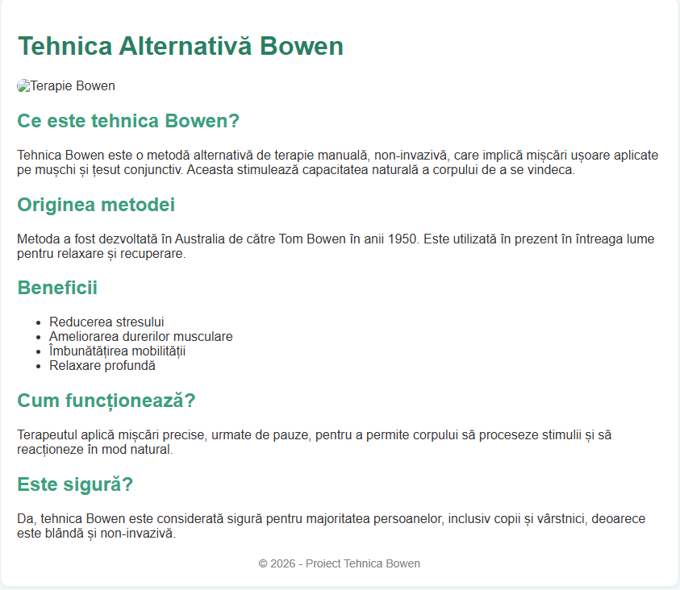

Tehnica Bowen este o metodă alternativă de terapie manuală, non-invazivă, care implică mișcări ușoare aplicate pe mușchi și țesut conjunctiv. Aceasta stimulează capacitatea naturală a corpului de a se vindeca.
Metoda a fost dezvoltată în Australia de către Tom Bowen în anii 1950. Este utilizată în prezent în întreaga lume pentru relaxare și recuperare.
Terapeutul aplică mișcări precise, urmate de pauze, pentru a permite corpului să proceseze stimulii și să reacționeze în mod natural.
Da, tehnica Bowen este considerată sigură pentru majoritatea persoanelor, inclusiv copii și vârstnici, deoarece este blândă și non-invazivă.